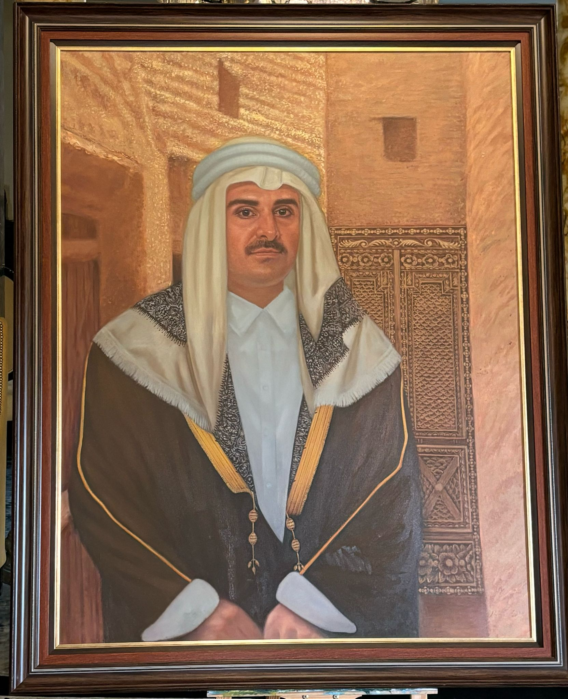

امتداد الهوية
هل وصلت لك الرسالة التي تحملها اللوحة؟

ماذا يعني أن يكون العقال باللون الأبيض؟ إنه ليس مجرد زينة، بل هو رمز يرتديه جهابذة الوطن، والعلماء، والوجهاء، والحكام. إنه يعكس النقاء والتميز، ويعبر عن مكانة رفيعة وعمق في المسؤولية والقيم.
وأما الباب الذي يقف خلف صورة الأمير، فهو أكثر من مجرد عنصر في اللوحة؛ إنه شاهد حي على التراث والتاريخ، يروي قصص الجذور العميقة والانفتاح على المستقبل.
"امتداد الهوية" – لوحة فنية تُجسد العراقة والتمسك بالتقاليد.
في هذه التحفة الفنية، يظهر سمو الأمير تميم بن حمد آل ثاني مرتديًا العقال الأبيض كرمزٍ للنقاء والتميّز، مع خلفية من بيوت الطين التي تعكس الإرث العريق. يبرز في اللوحة الباب الخشبي التاريخي، وهو باب مصنوع من شجر البلوط يعود إلى القرن التاسع عشر، مأخوذ من متحف الشيخ فيصل بن قاسم الرفاني، ليكون رمزًا لارتباط قطر بجذورها وثقافتها. يعكس الباب عمق التقاليد الراسخة التي تُلهم الأجيال وتعبر عن القيم الوطنية، حيث يمزج الماضي بالحاضر في صورة نابضة بالمعاني.
رُسمت اللوحة تحت إشراف الدكتورة دانه المعاضيد وبريشة الفنان العالمي فايثون اتماي (Phaithoon Itmy e)، مستخدمًا أجود الألوان الزيتية من علامة Gamblin لتحقيق عمق بصري وروح متجددة.
📏 حجم اللوحة: 18 × 24 إنشًا.
📅 تاريخ العمل: 4/2/2025
هذه ليست مجرد لوحة، بل انعكاس لروح وطن وإرث من القيم الأصيلة.
Identity's Legacy
Does the message of the artwork resonate with you?
Does the message of the artwork resonate with you?
What does the white agal signify? It’s more than an accessory—it represents purity, excellence, and the esteemed status of leaders, scholars, dignitaries, and rulers.
And the door behind the image of the Emir? It’s not just a feature—it’s a historic oak wood door from the 19th century, sourced from the Sheikh Faisal Bin Qassim Al-Thani Museum, symbolizing Qatar’s deep-rooted heritage and cultural connection while embracing the future.
This artwork, supervised by Dr. Dana Al-Maadid and crafted by the global artist Phaithoon Itmy e, brilliantly merges history and vision, creating an impactful narrative of Qatar’s traditions.
📏 Dimensions: 18 × 24 inches.
📅 Created on: 4/2/2025.
This is not merely a painting but a reflection of a nation's soul and a legacy of values that inspire generations.
L'Héritage de l'Identité
Ce message exprimé par cette œuvre vous touche-t-il ?
Que signifie le agal blanc ? Ce n'est pas qu'un ornement, mais un symbole de pureté, d'excellence, porté par les dirigeants, érudits, notables et souverains.
Et la porte derrière l'image de l'Émir ? Bien plus qu’un détail : une porte en bois de chêne historique du XIXe siècle, provenant du Musée Sheikh Faisal Bin Qassim Al-Thani, représentant l'héritage culturel profond du Qatar tout en embrassant l'avenir.
Créée sous la supervision de Dr Dana Al-Maadid et réalisée par l'artiste mondialement reconnu Phaithoon Itmy e, cette œuvre fusionne histoire et vision, créant une narration puissante des traditions qatariennes.
📏 Dimensions : 18 × 24 pouces.
📅 Date de création : 4/2/2025.
Cette œuvre n'est pas juste une peinture, mais une réflexion de l'âme d'une nation et un héritage des valeurs inspirant les générations.